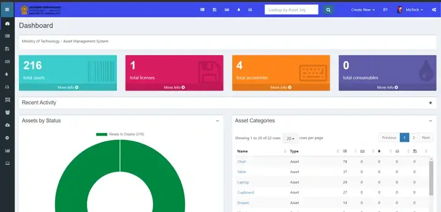
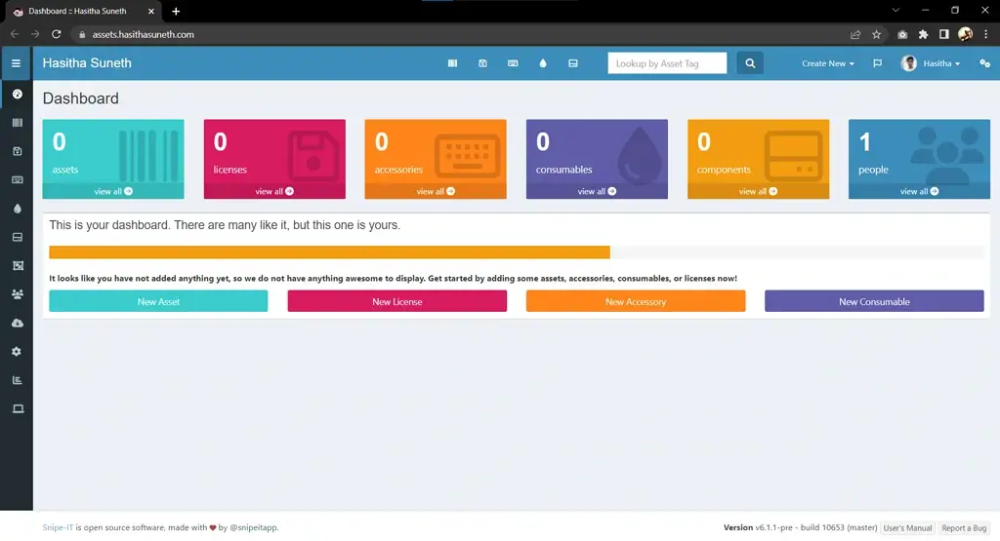

Snipe-IT Deployment on Linux (Ubuntu) via Docker, Apache & Nginx
Snipe-IT is web-based open-source software for asset management.
Table of contents
What is Snipe-IT?
Snipe-IT was made for asset management, to enable departments to track who has which asset, when it was purchased, which software licenses and accessories are available, and so on.
Snipe-IT is a Free Open Source (FOSS) web based project built on Laravel and it follows a standard Laravel MVC file structure.
This project is actively developed and they release quite frequently. Check out the Snipe-IT website for a demo, a comprehensive list of features, screenshots and announcements for updates on new versions.
Website Documentation Demo GitHub

I made a step-by-step guide of Snipe-IT installation, configuration, and its features for the Ministry of Technology Sri Lanka’s official website. I will provide links to each section of that documentation as follows:
Introduction
Overview, introduction, and getting started guide to the Snipe-IT asset management system.
Features
Main features available on the system and a guide on how to use them correctly.
Video Guides
This video guide includes feature reviews, configurations, and how to use the functionalities of the Snipe-IT system; it also includes the mobile application configuration and its features.
Installation
The installation guide covers how to deploy Snipe-IT software on a Linux (Ubuntu) system via Docker, Apache, and Nginx services.
This guide was created in June 2022, and later updates of Snipe-IT may make this guide’s configuration steps slightly different.
Install Snipe-IT via Docker
Install Docker Engine
Note
Find the official guide here. Follow this official guide for install Docker on other Linux distribution systems.
1. Uninstall old versions
sudo apt-get remove docker docker-engine docker.io containerd runc
2. Set up the repository
- Update the apt package index and install packages to allow apt to use a repository over HTTPS:
sudo apt-get update sudo apt-get install ca-certificates curl gnupg lsb-release - Add Docker’s official GPG key:
sudo mkdir -p /etc/apt/keyringscurl -fsSL https://download.docker.com/linux/ubuntu/gpg | sudo gpg --dearmor -o /etc/apt/keyrings/docker.gpg - Use the following command to set up the repository:
echo \"deb [arch=$(dpkg --print-architecture) signed-by=/etc/apt/keyrings/docker.gpg] https://download.docker.com/linux/ubuntu \$(lsb_release -cs) stable" | sudo tee /etc/apt/sources.list.d/docker.list > /dev/null
3. Install Docker Engine
- Update the apt package index, and install the latest version of Docker Engine, containerd, and Docker Compose, or go to the next step to install a specific version:
sudo apt-get install docker-ce docker-ce-cli containerd.io - Verify that Docker Engine is installed correctly;
sudo systemctl is-active docker
Install Snipe-IT via Docker
1. Update/Upgrade installed packages
sudo apt update && sudo apt upgrade
2. Create directories for mount with Docker containers.
- Create main directories
sudo mkdir /var/config /var/config/snipeit - Change the working directory to newly created snipeit directory.
cd /var/config/ snipeit - Create directories for mount with MySQL container and Snipe-IT container.
sudo mkdir snipe-mysql snipe-conf snipe-backup
3. Create a MySQL container with MySQL version 5.6
Replace the placeholders with your preference.
sudo docker run \
--name snipe-mysql \
-d \
-e MYSQL_ROOT_PASSWORD= <MYSQL_ROOT_PASSWORD> \
-e MYSQL_DATABASE=snipe \
-e MYSQL_USER=snipe \
-e MYSQL_PASSWORD= <MYSQL_USER_PASSWORD> \
-e TZ=Asia/Colombo \
-p 127.0.0.1:3306:3306 \
-v /var/config/snipeit/snipe-mysql:/var/lib/mysql \
mysql:5.6 --sql-mode=""
4. Create a Snipe-IT Docker image
Option 01:
- Generate a new snipe-it container with the latest version.
sudo docker run --rm snipe/snipe-it
Option 02:
- Generate a new Snipe-IT container with specified version. Find the latest Snipe-IT docker image version here.
sudo docker run --rm snipe/snipe-it:v6.0.2
After the downloading, output should look like this;
Please re-run this container with an environment variable $APP_KEYAn example APP_KEY you could use is:base64:D5oGA+zhFSVA3VwuoZoQ21RAcwBtJv/RGiqOcZ7BUvI=
Copy the APP_KEY (“based64:D5…”) and replace it with the placeholder at the next step (step 5).
5. Start the Snipe-IT container
Option 01: SSL Disabled
- Replace the placeholders with your MySQL details (Step 3) and APP_KEY (* without an APP_KEY it won’t work).
sudo docker create \ --name=snipe-it \ --link snipe-mysql:db \ -e PUID=1000 \ -e PGID=1000 \ -e DB_CONNECTION=mysql \ -e DB_HOST=snipe-mysql \ -e DB_DATABASE=snipe \ -e DB_USERNAME=snipe \ -e DB_PASSWORD=[MYSQL_USER_PASSWORD] \ -e APP_KEY=[APP_KEY] \ -p 8082:80 \ -v /var/config/snipeit/snipe-conf:/config \ -v /var/config/snipeit/snipe-backup:/var/www/html/storage/app/backups \ --restart unless-stopped \ snipe/snipe-it #snipe/snipe-it:v6.0.2
Option 02: SSL Enabled
- Replace the placeholders with your MySQL details (Step 3), SSL Port and APP_KEY (* without an APP_KEY it won’t work).
- Later, place the SSL Key and SSL Certificate inside the snipe-it docker container using the
docker cpcommand, at/var/lib/snipeit/ssl/snipeit-ssl.crtand/var/lib/snipeit/ssl/snipeit-ssl.key.sudo docker create \ --name=snipe-it \ --link snipe-mysql:db \ -e PUID=1000 \ -e PGID=1000 \ -e DB_CONNECTION=mysql \ -e DB_HOST=snipe-mysql \ -e DB_DATABASE=snipe \ -e DB_USERNAME=snipe \ -e DB_PASSWORD=[MYSQL_USER_PASSWORD] \ -e APP_KEY=[APP_KEY] \ -p 8082:80 \ -p [SSL_PORT]:443 \ -v /var/config/snipeit/snipe-conf:/config \ -v /var/config/snipeit/snipe-backup:/var/www/html/storage/app/backups \ --restart unless-stopped \ snipe/snipe-it # snipe/snipe-it:v6.0.2
6. Start the container.
sudo docker start snipe-it
7. Update the .env file with the site details and email configurations.
- Get the docker containers details.
sudo docker ps - Get into the Snipe-IT container.
sudo docker exec -it CONTAINER_ID /bin/bashDefault docker containers come with VI editor. If you want, you can install VIM or NANO editors using the following commands.
apt-get update apt-get install vim nano - Open
.envfile with an editor.vi .env - Uncomment and update the basic app settings. Replace the APP_KEY placeholder with your APP_KEY (Step 4) and APP_URL with your site domain (http://example.com:8082).
#-------------------------------------------- # REQUIRED: BASIC APP SETTINGS # -------------------------------------------- APP_ENV=production APP_DEBUG=false APP_KEY=<APP_KEY> APP_URL=http://127.0.0.1:8082 APP_TIMEZONE=Asia/Colombo APP_LOCALE=en - Update the outgoing email server settings.
# -------------------------------------------- # REQUIRED: OUTGOING MAIL SERVER SETTINGS # -------------------------------------------- MAIL_DRIVER=smtp MAIL_HOST=${MAIL_PORT_587_TCP_ADDR} MAIL_PORT=${MAIL_PORT_587_TCP_PORT} MAIL_USERNAME=${MAIL_ENV_USERNAME} MAIL_PASSWORD=${MAIL_ENV_PASSWORD} MAIL_ENCRYPTION=${MAIL_ENV_ENCRYPTION} MAIL_FROM_ADDR=${MAIL_ENV_FROM_ADDR} MAIL_FROM_NAME=${MAIL_ENV_FROM_NAME} MAIL_REPLYTO_ADDR=${MAIL_ENV_FROM_ADDR} MAIL_REPLYTO_NAME=${MAIL_ENV_FROM_NAME}
Example with a Gmail
Required to enable “Less secure app” settings at Gmail and generated password.
email address only use to send the test email.* # -------------------------------------------- # REQUIRED: OUTGOING MAIL SERVER SETTINGS # -------------------------------------------- MAIL_DRIVER=smtp MAIL_HOST=smtp.gmail.com MAIL_PORT=587 MAIL_USERNAME=your_username@gmail.com MAIL_PASSWORD=your_generated_password MAIL_ENCRYPTION=tls MAIL_FROM_ADDR=your_username@gmail.com MAIL_FROM_NAME=’ANY NAME’ MAIL_REPLYTO_ADDR=reciver_email@domain.com MAIL_REPLYTO_NAME=’ANY NAME’
- Save the changes and restart the Snipe-IT container.
exit sudo docker restart snipe-it
8. Snipe-IT pre-flight setup
Browse to the IP address of your Ubuntu server and you should see the pre-flight page (http://example.com:8082).
Install Snipe-IT via Apache
1. Update and upgrade installed packages on Linux server.
sudo apt update && sudo apt upgrade
2. Install Apache, MySQL, PHP, PHP-FPM and PHP dependencies.
- Install Apache.
sudo apt install apache2 - Install MySQL.
sudo apt install mysql-server - Install PHP and PHP-FPM.
sudo add-apt-repository universesudo apt install php-fpm php-mysql - Install PHP-Dependencies.
sudo apt-get install -y git unzip php php-curl php-mysql php-gd php-ldap php-zip php-mbstring php-xml php-bcmath php-tokenizer
Check the packages are installed correctly.
- MySQL server version & status
mysql –Vorservice mysql status- PHP Version
php --version- Apache version & status
apache2 -Vorsystemctl status apache2
3. Configure MySQL Server
- Run MySQL secure installation command line wizard and secure the installation.
sudo mysql_secure_installation
Tips
- Do you want to Install Validate Password Plugin? : Better use Yes
- Change the MySQL root user password. : Enter same password twice
- Do you want to remove anonymous users? : Yes
- Do you want to stop root login remotely? : Better use No
- Do you want to reload privileges table: Yes
Tips
If you get the following error while between the secure installation process, kill the current process and follow these steps; Failed! Error: SET PASSWORD has no significance for user ‘root’@’localhost’ as the authentication method used doesn’t store authentication data in the MySQL server.
- Login to MySQL
sudo mysql- Run This ALTER Query to change the authentication parameters. Replace placeholder (newpassword) with your preference.
ALTER USER 'root'@'localhost' IDENTIFIED WITH mysql_native_password by 'newpassword';And now, you are able to run mysql_secure_installation command.
4. Create an initial database and a user for the Snipe-IT
- Login to MySQL server, provide password for MySQL root user when it prompts;
sudo mysql -u root -p - Create new database named snipeit_db.
CREATE DATABASE snipeit_db; - Create a new user named snipeit_user. Replace the password placeholder with your own.
CREATE USER 'snipeit_user'@'localhost' IDENTIFIED BY 'password'; - Grant permissions to the user (snipeit_user) on the database (snipeit_db).
GRANT ALL PRIVILEGES ON snipeit_db.* TO 'snipeit_user'@'localhost'; - Flush the privileges
flush privileges; - Exit from the MySQL server.
quit; - Restart MySQL service
sudo service mysql restart
5. Download the Snipe-IT latest version.
- Change working directory to “/var/www/”
cd /var/www/ - Clone recent version of the Snipe-IT from GIT into a local folder (snipeit).
sudo git clone https://github.com/snipe/snipe-it snipeit
6. Update the .env file with the site, database and email configuration details.
- Change working directory to “/var/www/snipeit/”
cd /var/www/snipeit/ - Make a copy of
.envenvironmental filesudo cp .env.example .env - Open
.envfile with a text editor.sudo vi .env or sudo nano .env - Update the basic app settings. Replace the APP_URL with your domain (http://example.com).
#-------------------------------------------- # REQUIRED: BASIC APP SETTINGS # -------------------------------------------- APP_ENV=production APP_DEBUG=false APP_KEY=<APP_KEY> APP_URL=http://127.0.0.1:8082 APP_TIMEZONE=Asia/Colombo APP_LOCALE=en - Update the database settings. Replace the “DB_PASSWORD” placeholder with your MySQL snipeit user’s password.
# -------------------------------------------- # REQUIRED: DATABASE SETTINGS # -------------------------------------------- DB_CONNECTION=mysql DB_HOST=127.0.0.1 DB_DATABASE=snipeit_db DB_USERNAME=snipeit_user DB_PASSWORD=<password> DB_PREFIX=null DB_DUMP_PATH='/usr/bin' DB_CHARSET=utf8mb4 DB_COLLATION=utf8mb4_unicode_ci - Update the outgoing email server settings.
# -------------------------------------------- # REQUIRED: OUTGOING MAIL SERVER SETTINGS # -------------------------------------------- MAIL_DRIVER=smtp MAIL_HOST=${MAIL_PORT_587_TCP_ADDR} MAIL_PORT=${MAIL_PORT_587_TCP_PORT} MAIL_USERNAME=${MAIL_ENV_USERNAME} MAIL_PASSWORD=${MAIL_ENV_PASSWORD} MAIL_ENCRYPTION=${MAIL_ENV_ENCRYPTION} MAIL_FROM_ADDR=${MAIL_ENV_FROM_ADDR} MAIL_FROM_NAME=${MAIL_ENV_FROM_NAME} MAIL_REPLYTO_ADDR=${MAIL_ENV_FROM_ADDR} MAIL_REPLYTO_NAME=${MAIL_ENV_FROM_NAME} - Save the changes and exit.
7. Update folder permissions in the Snipe-IT root directory to the user of the Apache.
sudo chown -R www-data:www-data /var/www/snipeit/
sudo chmod -R 755 storage public/uploads
8. Download & Install composer.
- Change working directory to the Snipe-IT install directory.
cd /var/www/snipeit - Download the composer.
curl -sS https://getcomposer.org/installer | php - For local composer installations.
php composer.phar install --no-dev --prefer-source - For global composer installations.
composer install --no-dev --prefer-source
9. Generate an APP_Key for the .env file.
sudo php artisan key:generate- Verify the generated APP_Key by opening the .env file and check “APP_KEY” value.
cat /var/www/snipeit/.envornano /var/www/snipeit/.env
10. Apache server configurations
- Create a new site configuration file with your preferred name.
sudo cp /etc/apache2/sites-available/000-default.conf /etc/apache2/sites-available/snipeit.conf - Open the configuration file.
sudo nano /etc/apache2/sites-available/snipeit.conf - Add site content as follows, Replace Server Name to your Ubuntu Server’s IP address, and Document root and directory locations to Snipe-IT installation directory public folder (…/snipeit/public/).
<VirtualHost *:80>
<Directory /var/www/snipeit/public/>
Allow From All
AllowOverride None
Options None
</Directory>
DocumentRoot /var/www/snipeit/public/
ServerName 127.0.0.1
# Other directives here
RewriteEngine On
# From public/.htaccess
RewriteCond %{DOCUMENT_ROOT}%{REQUEST_FILENAME} !-d
RewriteCond %{REQUEST_URI} (.+)/$
RewriteRule ^ %1 [L,R=301]
RewriteCond %{DOCUMENT_ROOT}%{REQUEST_FILENAME} !-d
RewriteCond %{DOCUMENT_ROOT}%{REQUEST_FILENAME} !-f
RewriteRule ^ /index.php [L]
</VirtualHost>
- Disable the default site
sudo a2dissite 000-default.conf - Enable the new site.
sudo a2ensite snipeit.conf - Restart the Apache service
sudo systemctl reload apache2
11. Snipe-IT pre-flight setup
Browse to IP address of your Ubuntu server and you should see the pre-flight page (http://example.com).
Install Snipe-IT via Nginx
1. Update and upgrade installed packages on Linux server.
sudo apt update && sudo apt upgrade
2. Install NGINX, MySQL, PHP, PHP-FPM and PHP dependencies.
- Install NGINX.
sudo apt install nginx - Install MySQL.
sudo apt install mysql-server - Install PHP and PHP-FPM.
sudo add-apt-repository universesudo apt install php-fpm php-mysql - Install PHP-Dependencies.
sudo apt-get install -y git unzip php php-curl php-mysql php-gd php-ldap php-zip php-mbstring php-xml php-bcmath php-tokenizerCheck that the packages are installed correctly.
3. Configure MySQL Server
- Run MySQL secure installation command line wizard and secure the installation.
sudo mysql_secure_installation
4. Create an initial database and a user for the Snipe-IT
- Login to MySQL server, provide password for MySQL root user when it prompts;
sudo mysql -u root -p - Create new database named snipeit_db.
CREATE DATABASE snipeit_db; - Create a new user named snipeit_user. Replace the password placeholder with your own.
CREATE USER 'snipeit_user'@'localhost' IDENTIFIED BY 'password'; - Grant permissions to the user (snipeit_user) on the database (snipeit_db).
GRANT ALL PRIVILEGES ON snipeit_db.* TO 'snipeit_user'@'localhost'; - Flush the privileges
flush privileges; - Exit from the MySQL server.
quit; - Restart MySQL service
sudo service mysql restart
5. Download the Snipe-IT latest version.
- Change working directory to “/var/www/”
cd /var/www/ - Clone recent version of the Snipe-IT from GIT into a local folder (snipeit).
sudo git clone https://github.com/snipe/snipe-it snipeit
6. Update the .env file with the site, database and email configuration details.
- Change working directory to “/var/www/snipeit/”
cd /var/www/snipeit/ - Make a copy of
.envenvironmental filesudo cp .env.example .env - Open
.envfile with a text editor.sudo vi .env or sudo nano .env - Update the basic app settings. Replace the APP_URL with your domain (http://example.com).
#-------------------------------------------- # REQUIRED: BASIC APP SETTINGS # -------------------------------------------- APP_ENV=production APP_DEBUG=false APP_KEY=ChangeMe APP_URL=http://127.0.0.1 APP_TIMEZONE='UTC' APP_LOCALE=en MAX_RESULTS=500 - Update the database settings. Replace the “DB_PASSWORD” placeholder with your MySQL snipeit user’s password.
# -------------------------------------------- # REQUIRED: DATABASE SETTINGS # -------------------------------------------- DB_CONNECTION=mysql DB_HOST=127.0.0.1 DB_DATABASE=snipeit_db DB_USERNAME=snipeit_user DB_PASSWORD=<password> DB_PREFIX=null DB_DUMP_PATH='/usr/bin' DB_CHARSET=utf8mb4 DB_COLLATION=utf8mb4_unicode_ci - Update the outgoing email server settings.
# -------------------------------------------- # REQUIRED: OUTGOING MAIL SERVER SETTINGS # -------------------------------------------- MAIL_DRIVER=smtp MAIL_HOST=email-smtp.us-west-2.amazonaws.com MAIL_PORT=587 MAIL_USERNAME=YOURUSERNAME MAIL_PASSWORD=YOURPASSWORD MAIL_ENCRYPTION=null MAIL_FROM_ADDR=you@example.com MAIL_FROM_NAME='Snipe-IT' MAIL_REPLYTO_ADDR=you@example.com MAIL_REPLYTO_NAME='Snipe-IT' MAIL_AUTO_EMBED_METHOD='attachment' - Save the changes and exit.
7. Update folder permissions in the Snipe-IT root directory to the user of the Nginx.
sudo chown -R www-data:www-data /var/www/snipeit/sudo chmod -R 755 storage public/uploads
8. Download & Install composer.
- Change working directory to the Snipe-IT install directory.
cd /var/www/snipeit - Download the composer.
curl -sS https://getcomposer.org/installer | php - For local composer installations.
php composer.phar install --no-dev --prefer-source - For global composer installations.
composer install --no-dev --prefer-source
9. Generate an APP_Key for the .env file.
sudo php artisan key:generate- Verify the generated APP_Key by opening the .env file and check “APP_KEY” value.
cat /var/www/snipeit/.envornano /var/www/snipeit/.env
10. NGINX server configurations
- Create a new site with your preferred name.
sudo nano /etc/nginx/sites-available/site_name - Add site content as follows, Replace Server Name to your Ubuntu Server’s IP address, root location to Snipe-IT installation directory public folder, and the PHP-FPM version (Ex: php-fpm7.4 as php7.4-fpm).
server {
listen 80;
listen [::]:80;
server_name 127.0.0.1;
root /var/www/snipeit/public/;
index index.php index.html index.htm;
access_log /var/log/nginx/site_name.access.log;
error_log /var/log/nginx/site_name.error.log;
location / {
try_files $uri $uri/ /index.php$is_args$args;
}
location ~ \.php$ {
include snippets/fastcgi-php.conf;
fastcgi_pass unix:/var/run/php/php7.4-fpm.sock;
include fastcgi_params;
fastcgi_param SCRIPT_FILENAME $document_root$fastcgi_script_name;
fastcgi_intercept_errors on;
}
}
- Enable the new site.
sudo ln -s /etc/nginx/sites-available/site_name /etc/nginx/sites-enabled/ - Disable default site
sudo unlink /etc/nginx/sites-enabled/default - Restart Nginx service
sudo service nginx restart
11. Snipe-IT pre-flight setup
Browse to IP address of your Ubuntu server and you should see the pre-flight page (http://example.com).
Pre-Flight
Screenshots
